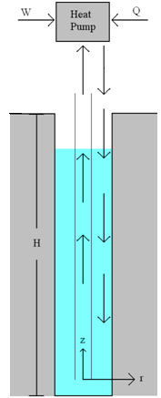
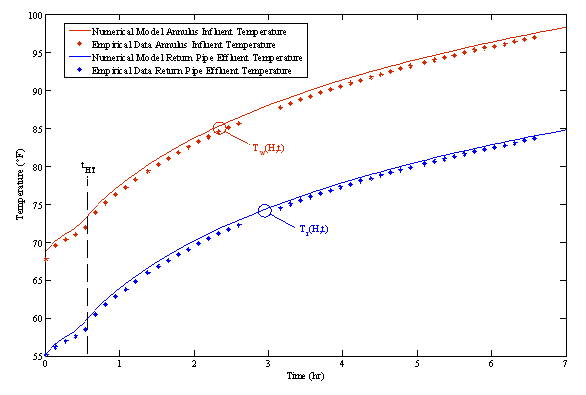
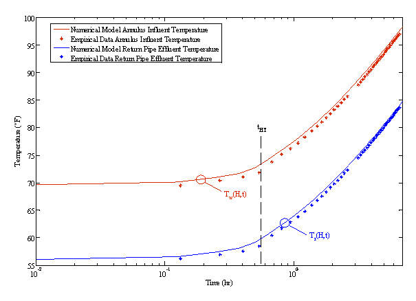
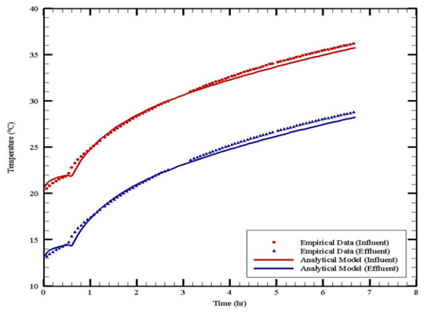
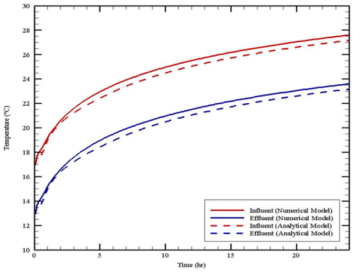
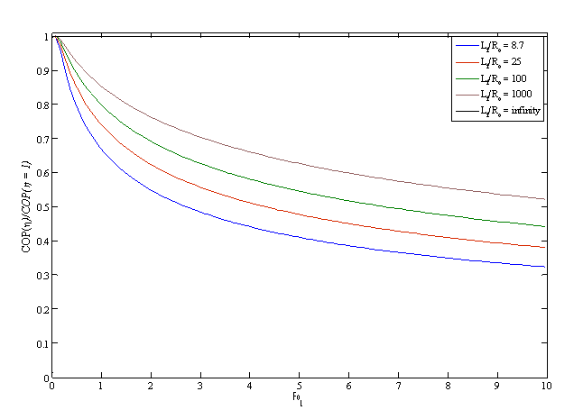
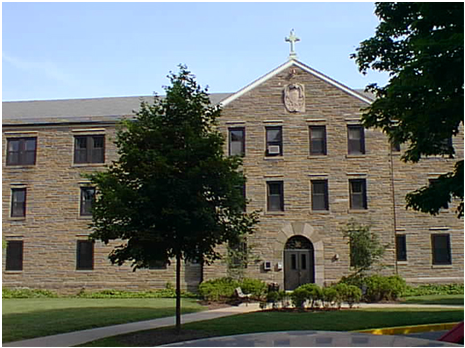

|
With the recent increase in energy prices, new
techniques of providing energy to sustain our society's standard of
living must be designed. Earth energy storage (EES) is a technology
that pumps thermal energy into the ground to be stored by sensible or
latent energy storage mechanisms for future use. EES has a large
potential for energy storage in the residential and commercial heating,
ventilating, and air conditioning (HVAC) sector, as well as the
concentrated solar power (CSP) industry.
Project Description
Traditional techniques for injection of heat require wells that act as
line sources that conduct radially into the ground formation for future
use. Since ground formations are composed typically of low conductivity
material, there is great potential for research on improving the
overall process of building and operating EES systems.
This project seeks to mathematically model mechanisms for thermal
energy storage in ground formations. Solar energy is stored in a ground
formation for future use. The mechanism for transferring this energy
into the ground formation is a geothermal well. The effects of the
thermal and hydraulic properties of the ground formation are
investigated through scaling analyses that allow for the optimization
of the thermal response to maximize the energy efficiency of the well. [less]
HVAC Industry Research
Geothermal
wells are of great interest in the building heating and cooling
industry as the preferred method for utilizing the ground as a thermal
reservoir instead of the atmosphere. A typical geothermal well is
between 100-500 m deep and 0.1-0.25m (4-10 inches) in diameter. There
are many types of geothermal wells used with ground source heat pumps.
The geothermal wells studied in this paper are referred to as standing
column wells (SCW).
Standing column wells operate in an open
loop and the circulating water is physically in direct contact with the
ground and groundwater. Water is extracted from below the water table
into a building, circulated through the building HVAC system, and
returned to the ground. A schematic of such a system is shown in Fig.
1. The ground surrounding the well is specific to the region and ranges
from porous rock to solid rock with random cracks, allowing for
advection through the ground formation. The capacity of the ground for
storing energy is determined by its thermal diffusivity, consisting of
its thermal conductivity, density, and specific heat. Additionally,
groundwater flow advection affects the spatial distribution of
temperature and therefore affects energy storage. The ground formation
properties are generally anisotropic, and the temperature profile is
largely two-dimensional and transient.
 Fig.1: Diagram of standing column well operation in an infinite line of wells
Standing
column wells have traditionally been designed following water well
technology that has been extensively studied in the past century and
encoded in well accepted design handbooks [1,2]. Circulating SCWs
exhibit physics similar to the physics encountered in petroleum and
geothermal wells during drilling. The major difference between these
wells and standing column wells is that the goal of drilling is to
reach an oil reservoir or plume of hot rock, and the loss of petroleum
or heat to the ground formation during extraction is undesirable. In
contrast, standing column well operation is dependent on good thermal
interaction with the ground formation. The design of petroleum wells is
reasonably standardized [3]. The length and diameter of oil wells are
orders of miles and feet, respectively. In groundwater technology, the
length and diameter of wells is limited to hundreds of feet, and
inches, respectively. Groundwater well technology has been extensively
studied in the ground water hydraulics literature [1] and
ground-coupled (closed loop) geothermal systems in the HVAC literature
[4,5].
Standing column wells have attracted more attention
in recent years due to efficiency gains over closed loop systems: Rees
et al. [6], Deng et al. [7] and Spitler et al. [8] focused on single
SCW modeling using both analytical and numerical techniques that
assumed isotropic "effective" properties. These studies found that the
defining properties that limit operation are the ground thermal
conductivity, bleed rate, and well depth. Bleed rate is the intentional
removal of water from a well to induce groundwater movement and enhance
thermal transport. The advection through the ground formation due to
pressure gradients is especially important in determining the thermal
interaction with the well.
In order to provide a baseline
for future analyses, the simplest numerical analysis was performed on a
geothermal well assuming the well to be axisymmetric, constant
properties of the ground and compared with empirical data as shown in
Fig. 2. The asymptotes of the solution in logarithmic form show the
transition of the physics in the problem from a well water thermal mass
dominated system to a ground formation thermal resistance dominated
solution. From this analysis, first principles were used to produce an
analytical solution which was compared to the numerical model and
empirical data with different operational parameters. The advantage of
the analytical solution is the speed of use and the ability to scale
the problem for analysis.
There has been little fundamental
work reported beyond the study of single isolated circulating standing
column wells. Most SCW installations for large systems require the
utilization of a field of wells spaced at some distance from each
other. A typical well field may consist of a matrix of evenly spaced
wells extending in two directions. For practical reasons it is
desirable to place the wells as close to each other as possible, so
that the required yearly storage capacity can be accomplished in a
minimal land area. However, wells must be properly spaced to avoid
thermal interference and thereby reduction in their ability to store
energy. As a first step towards modeling the problem, an approximate
analytical model, and a numerical model are developed for determining
the thermal behavior of a line of evenly spaced wells operating
concurrently. The numerical model is validated against analytical
constants from the analytical model and empirical data. The approximate
analytical model provides a means for calculating the degradation of
efficiency due to thermal encroachment and its effect on the ideal
coefficient of performance for a ground-coupled heat pump system. These
results are presented in Fig. 4.
Analytical Model, Numerical Model, and Empirical Data Results
  Fig.2: Axisymmetric numerical model of a single well compared with empirical
data. (Top) Results compared with the logarithm of time. (Bottom)   Fig.3: Analytical model compared to empirical data (Top) and numerical model (Bottom).
 Fig.4:
Coefficient of performance of a well in an infinite line compared to an
isolated well's coefficient of performance with respect to Fourier
number. (FoL = at/Lf2) References
[1] Bear, Jacob. Hydraulics of Groundwater (Dover Books on Engineering). Minneapolis: Dover Publications, 2007.
[2] Domenico, Patrick A., and Franklin W. Schwartz. Physical and Chemical Hydrogeology, 2nd Edition. New York: Wiley, 1997.
[3] Aadnoy, Bernt S. Modern Well Design. Dallas: Taylor & Francis, 1996.
[4]
ASHRAE. Commercial/Institutional Ground-Source Heat Pump Engineering
Manual. Atlanta: American Society of Heating, Refrigerating and
Air-Conditioning Engineers, Inc. 1995.
[5] Kavanaugh, S.P.,
and K. Rafferty, Ground-Source Heat Pumps: Design of Geothermal Systems
for Commercial and Institutional Buildings. Atlanta: American Society
of Heating , Refrigerating and Air-Conditioning Engineers, Inc. 1997.
[6]
Rees, S.J., J.D. Spitler, Z. Deng, C.D. Orio and C.N. Johnson. 2004. A
Study Of Geothermal Heat Pump And Standing Column Well Performance.
ASHRAE Transactions, 110(1):3-13.
[7] Deng, Zheng. Modeling of Standing Column Wells in Ground Source Heat Pump Systems. Diss. Oklahoma State University, 2004.
[8]
Spitler, J.D., Rees, S.J., Deng, Z., Chiasson, A., Orio, C.D., Johnson,
C. ASHRAE RP-1119: R&D studies applied to standing column well
design. Final Report. Oklahoma State University, Stillwater, OK. 2002.
Campus Facilities
Fedigan
Hall is a residence hall at Villanova University implementing ground
source heat pump technology being investigated in this study. The
geothermal well is 800 feet deep and pumps groundwater to supplement
the current heating and cooling systems in the building.  Fig.5: Picture of Fedigan Hall. (Source: VU Website)
Publications
Woods, K., Ortega A., and Koenig, "Thermal Modeling of a Geothermal
Well Field for Ground Source Water Heat Pump Systems," IMECE, Lake
Buena Vista, Florida, USA (2009)
 PDF (199 K) PDF (199 K)
|